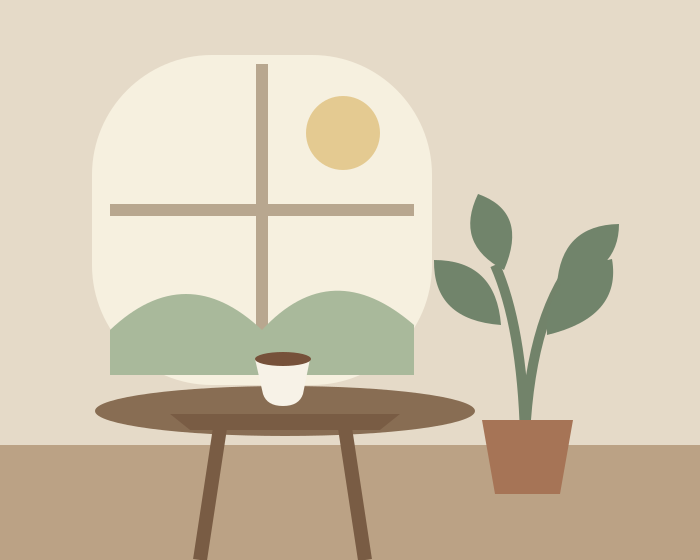

尊重風味
認識咖啡豆的產地特色，讓不同風味被細細品嚐。
ABOUT BLUE SKY
認識藍天咖啡，以及我們想分享的生活風景。
OUR BEGINNING
我們想像一個地方，讓人能夠放慢腳步，好好喝一杯咖啡。
藍天咖啡的起點，是對咖啡香氣與日常片刻的喜愛。我們希望透過一杯溫暖的咖啡，讓每一次停留都多一點自在。
OUR BELIEFS
簡單而踏實地做好每個細節。
認識咖啡豆的產地特色，讓不同風味被細細品嚐。
用心對待烘焙與沖泡，讓咖啡的香氣自然展開。
為忙碌的日常留一點空間，讓相聚與獨處都自在。
